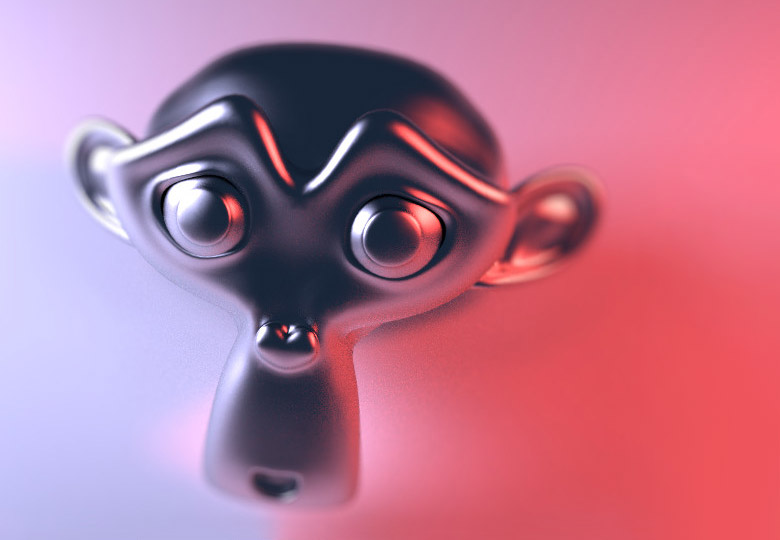

Вузол «Розмив Боке» -- Bokeh Blur Node¶
Вузол «Розмив Боке» -- Bokeh Blur Node.
Вузол «Розмив Боке» -- Bokeh Blur генерує розмив типу боке подібно до вузла «Розфокус» -- Defocus. На відміну від вузла «Розфокус» фокусований регіон визначається компонівником. Існує також більш гнучкий засіб отримання цього типу розмиву за допомогою вузла Зображення Боке -- Bokeh Image.
Також доступні такі різні оптимізації продуктивності, як підтримка OpenCL, обчислення ділянки вимежування та маскування.
Уводи -- Inputs¶
- Зображення -- Image
- Стандартний увід зображення.
- Боке -- Bokeh
- Це увід для даних з вузла Зображення Боке -- Bokeh Image.
- Розмір -- Size
- «Розмір» керує величиною розмиву. Значення розміру може бути або одиничним для усього зображення, якщо воно задане вручну в його полі устави, або змінним, що визначається увідним зображенням, якщо воно подане на цей увід. Для використання змінності розміру одночасно повинна бути увімкнена опція «Змінний Розмір» -- Variable Size. Дивіться розділ з прикладами нижче про те, як це використовувати.
- Габаритна Коробка -- Bounding Box
- Це може використовуватися разом з мате-вузлом Прямокутна Маска -- Box Mask або з увідним вузлом Маска -- Mask </compositing/types/input/mask> для вимежування ділянки зображення, до якої буде застосовано розмив. Це може бути корисним, наприклад, при розробці системи вузлів і відведенні тільки маленької ділянки зображення для відфільтровування під розмив, і таким чином, економлячи час на внесення регулювань.
Властивості¶
- Змінний Розмір -- Variable Size
- Дозволяє змінний радіус розмиву, якщо на роз'єм «Розмір» -- Size подане зображення.
- Макс Розмив -- Max blur
- «Макс Розмив» призначений діяти, як засіб оптимізації шляхом лімітування кількості пікселів, через які обчислюється розмив.
Виводи -- Outputs¶
- Зображення -- Image
- Стандартний вивід зображення.
Приклади¶
Три приклади того, як можна використати увід «Розмір» - Size.
Відмасковане за ID -- ID masked альфа-зображення може бути використане так, щоб задньоплан був розмитий, а об'єкти на передньоплані залишалися у фокусі. Для запобігання дивним краям повинен бути використаний вузол «Розширення/Звуження» -- Dilate Node.
Прохід Z може бути візуалізований за допомогою вузла «Розкладка Значень» -- Map Value та вузла «Колірний Градієнт» -- Color Ramp, як описано тут --doc:Render Layers </compositing/types/input/render_layers>. Вузол «Математика --- Множення» -- multiply Math може бути використаний, після вузла Color Ramp, щоб значення розмиву, більше за одиницю, використовувалося для об'єктів поза діапазоном фокусування.
{kind=link}
Вручну створене сіровідтінкове зображення може використовуватися для визначення ділянок різкості та розмиву попереднього зображення. І знову, вузол «Математика: Множення» може бути використано для такого самого вживання значення розмиву, що більше ніж один.

Використано Image.

Використано прохід Z. |

Використано Image. |